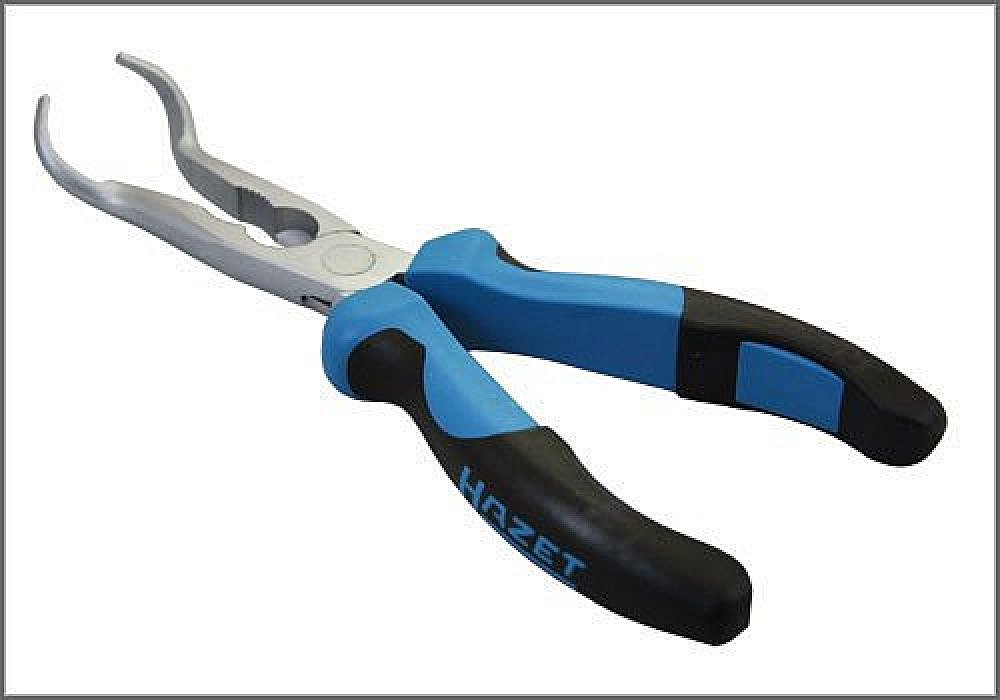

Spark Plug Pliers - AST Tool # H 1849
Spark Plug Pliers
AST tool# H 1849

Used for the R and R of spark plug connectors and specifically for those with anti-heat terminals. These Pliers are applicable to Mercedes models 190 E and 300 E, and VW/Audi.
- Spark Plug Pliers
- Applicable to Mercedes, VW and Audi
- Steel Construction and Easy-Grip Handle
Contact AST for pricing.
Assenmacher Specialty Tools
1-800-525-2943